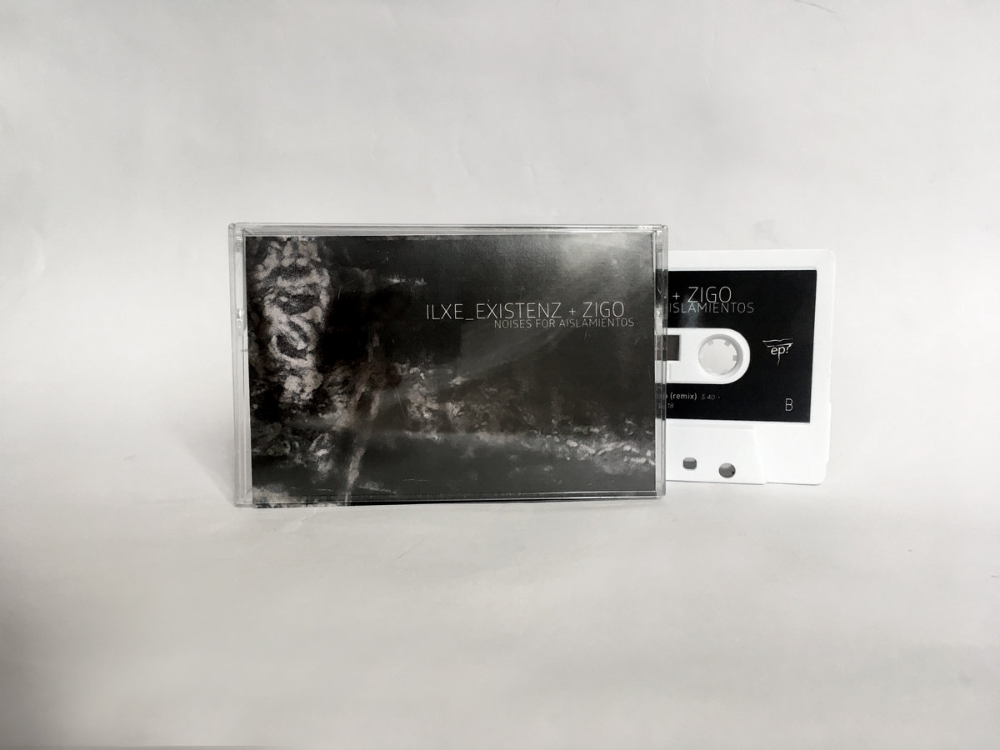

Idra
Grabado en el año 2.018, es el álbum debut del proyecto con una clara
tendencia hacia la Música
ambient
"emotiva" con capas de modulaciones y ruido blanco.
El álbum tiene 7 track con tiempos y timbres similares, la intención es generar dentro de la duración un "mismo sentido", con momentos diferentes y con una temporalidad progresiva. El grado de "sensación de emotividad" viene dado en el uso de sintetizadores con timbres de alto "brillo" acompañados por capaz de ruido blanco que desenlazan los tracks.
Publicado por el sello Isla Vision.
Nada
Es un mini-álbum conceptual grabado en 2.020 donde se busco representar lo que Kazimir Malevich, pintor Ruso, denomino el arte del "suprematismo" a partir de su pintura "Cuadro negro sobre fondo blanco". En este tipo de expresión propone el inicio de un tipo de pintura que no represente la figuración, inclinandose hacia el "no objeto". Esta lógica fue personalmente interpretada con sonidos, dejando de lado la estructura líneal de las canciones y el uso de instrumentos (la totalidad del mini-álbum está realizada por la técnica de no-input mixer).
Publicado por el sello Veinte33records.
Desde los inicios del proyecto existió la posibilidad de participar en compilacionesde de diferentes países y diferentes propuestas musicales.
Esta es una lista de todas las participaciones ordenadas temporalmente desde el año 2017 hasta el presente.
Publicado por Varios
A fines del año 2.020, por medio de un acercamiento del músico Fiorella 16 y el sello de México Silencio Epi Records surgió la idea de trabajar en un álbum colaborativo entre el músico Zigo Rayopineal y el proyecto Existenz.
Se trabajó con intercambio de grabaciones de pistas que luego fueron editadas y mezcladas. El resultado fue un mini-álbum de sonidos repetitivos, silencio, atmosferas oscuras y ruido industrial. Se incluyó la participación del músico Juan Jose Calarco, que participó con una versión remix.
Publicado por el sello Silencio Epi records